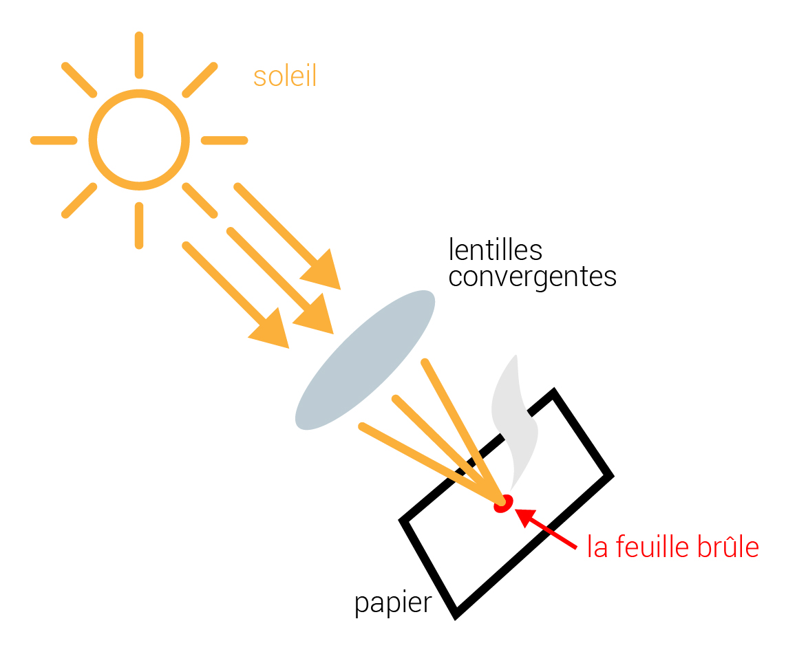
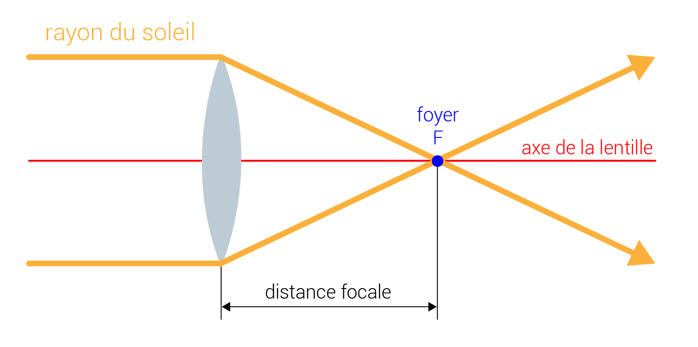
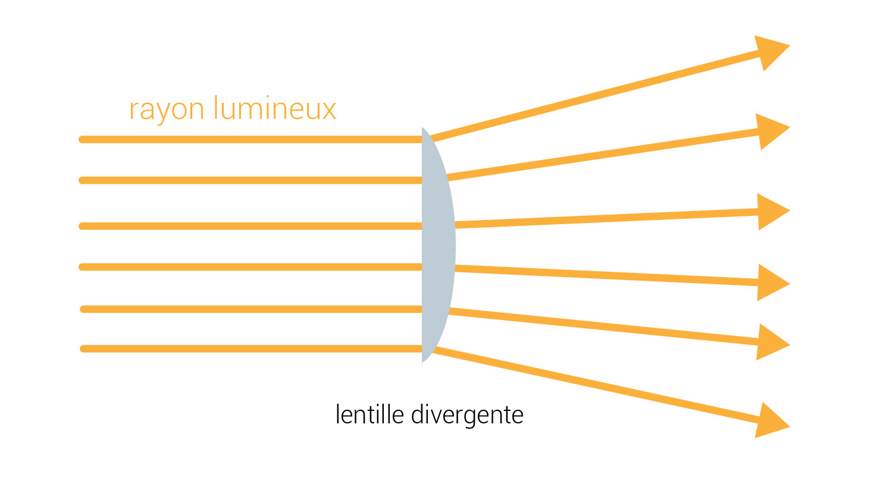
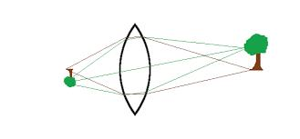
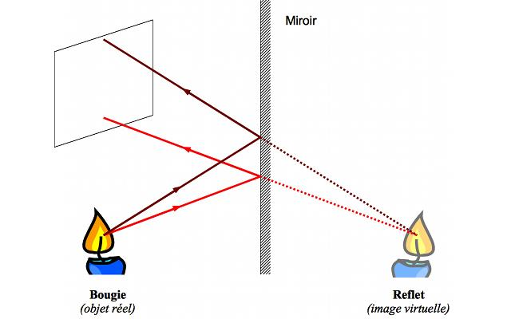

The lenses are made from a transparent material (glass or plastic). It can be observed that all these lenses are delimited by two smooth surfaces of which at least one is a curved surface. They are all symmetrical with respect to an axis called the optical axis.
The lenses can be classified into two types:
In optics, a focus is a focal point of the light rays emitted from one point after passing through an optical system (eg. Lens).
By illuminating a converging lens with a parallel light beam, we can focus the light into a small spot almost reduced to a point. If we place a piece of paper at this point, it ignites. This is what we call the focus of a lens.
 
By illuminating a diverging lens with a parallel beam of light, we can see that the light beam is deflected when it passes through the lens.

When a light object is at a distance greater than the focal length f, the lens forms its image inverted, at a distance; this image can be observed on a screen.

